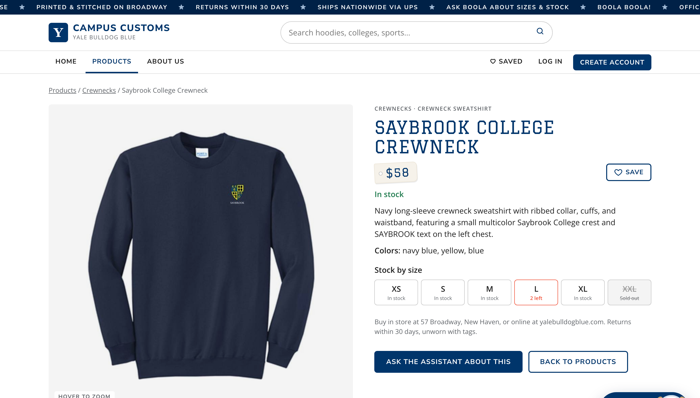
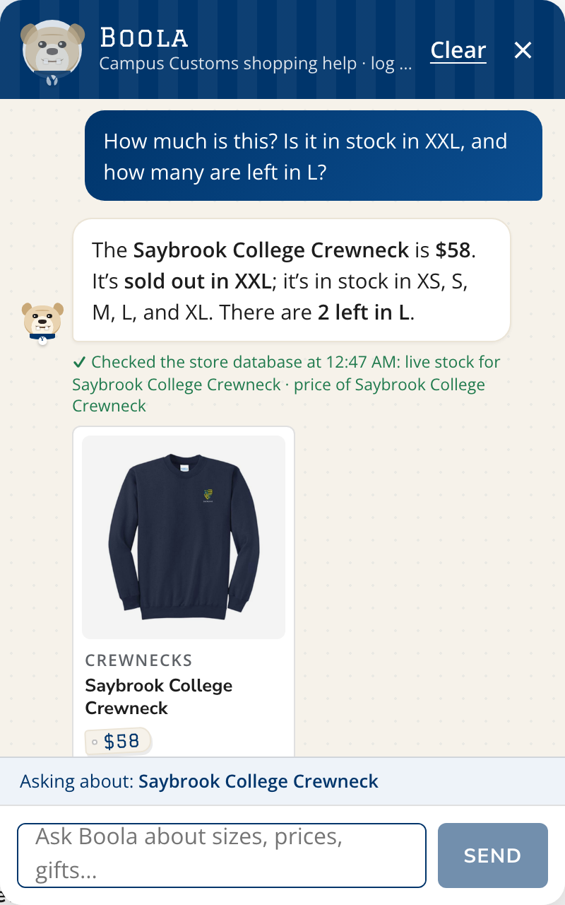
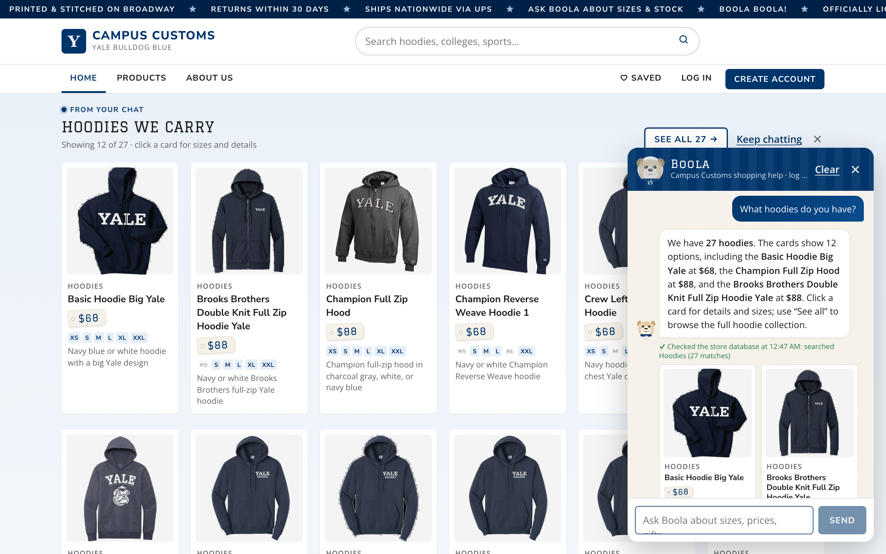
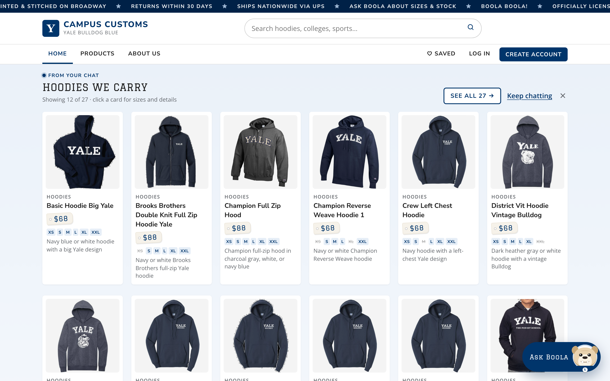
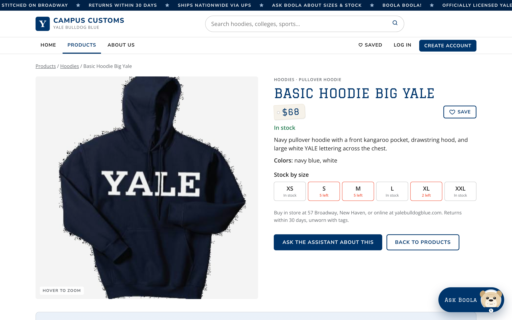
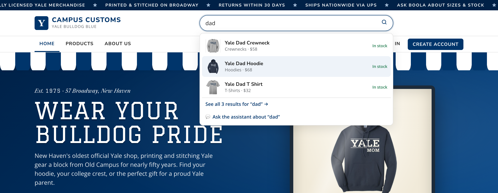
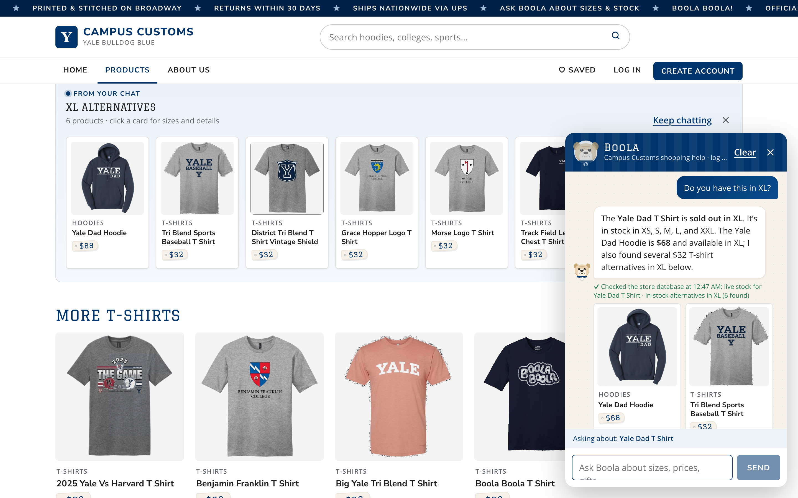

Summary
| Check | What was tested | Result |
|---|---|---|
| 1 | Chat reports price and stock by size for an item, matching the database | Pass |
| 2 | A category question makes product cards appear on the page, and a card opens its product page | Pass |
| 3 | Instant search suggestions (Problem 9 usability feature) | Pass |
| Bonus | find_alternatives offers in-stock substitutes for a sold-out size (Problem 9) | Pass |
1. Chat checks the inventory level of an item
✓ Honest stock and price from the DB

Shopper: How much is this? Is it in stock in XXL, and how many are left in L?
Boola (4.7 s): The Saybrook College Crewneck is $58. It’s sold out in XXL; it’s in stock in XS, S, M, L, and XL. There are 2 left in L.
✓ Checked the store database at 12:47 AM: live stock for Saybrook College Crewneck · price of Saybrook College Crewneck
| Size | XS | S | M | L | XL | XXL |
|---|---|---|---|---|---|---|
| Qty | 15 | 15 | 15 | 2 | 15 | 0 |
What this proves: Boola's answer, "$58, sold out in XXL, 2 left in L, in stock in XS, S, M, L, and XL", matches the database row by row. The green line underneath is written by the server from the lookups it actually ran (live stock and price), not by the model.
2. Dynamic search-result cards after a category question
✓ Agent returns structured matches, and the page renders them as cards
Shopper: What hoodies do you have?
Boola (7.4 s): We have 27 hoodies. The cards show 12 options, including the Basic Hoodie Big Yale at $68, the Champion Full Zip Hood at $88, and the Brooks Brothers Double Knit Full Zip Hoodie Yale at $88. Click a card for details and sizes; use “See all” to browse the full hoodie collection.
✓ Checked the store database at 12:47 AM: searched Hoodies (27 matches)
What this proves: the agent searched the catalogue and returned structured picks, and the site rendered them as live product cards on the current page, with a "See all 27" link to /products?category=Hoodies. The "27" matches the database: 27 products are in the Hoodies category.


/products/basic-hoodie-big-yale: a large image and full details, $68.What this proves: cards the chat puts on the page still open the single-item page from Problem 3 (large image, description, price, stock by size).
3. Problem 9 usability feature: instant search suggestions
✓ Live suggestions while typing, with keyboard support
/products/yale-dad-hoodie.| Suggestion | Shown | Stock label | Database |
|---|---|---|---|
| Yale Dad Crewneck | Crewnecks · $58 | In stock | $58 · sizes in stock: XS, S, XXL |
| Yale Dad Hoodie | Hoodies · $68 | In stock | $68 · sizes in stock: XS, S, M, L, XL, XXL |
| Yale Dad T Shirt | T-Shirts · $32 | In stock | $32 · sizes in stock: XS, S, M, L, XXL |
What this proves: shoppers can find a specific item in a few keystrokes, with prices and stock that match the database, and can use the keyboard throughout.
Bonus (Problem 9): find_alternatives when a size is sold out
✓ Substitutes are really in stock in the requested size

Shopper: Do you have this in XL?
Boola (6.4 s): The Yale Dad T Shirt is sold out in XL. It’s in stock in XS, S, M, L, and XXL. The Yale Dad Hoodie is $68 and available in XL; I also found several $32 T-shirt alternatives in XL below.
✓ Checked the store database at 12:47 AM: live stock for Yale Dad T Shirt · in-stock alternatives in XL (6 found)
| Size | XS | S | M | L | XL | XXL |
|---|---|---|---|---|---|---|
| Qty | 20 | 12 | 20 | 15 | 0 | 12 |
| Alternative | XL qty |
|---|---|
| District Tri Blend T Shirt Vintage Shield | 8 |
| Grace Hopper Logo T Shirt | 8 |
| Morse Logo T Shirt | 25 |
| Track Field Left Chest T Shirt | 8 |
| Tri Blend Sports Baseball T Shirt | 25 |
| Yale Dad Hoodie | 12 |
What this proves: a sold-out size isn't a dead end. Every suggested substitute has XL in stock, which the tool checks in code, and the answer about the original item stays honest (XL = 0).